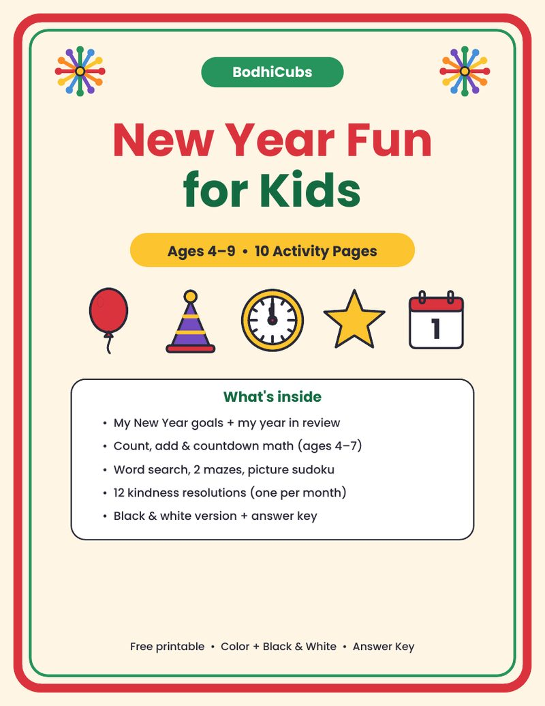
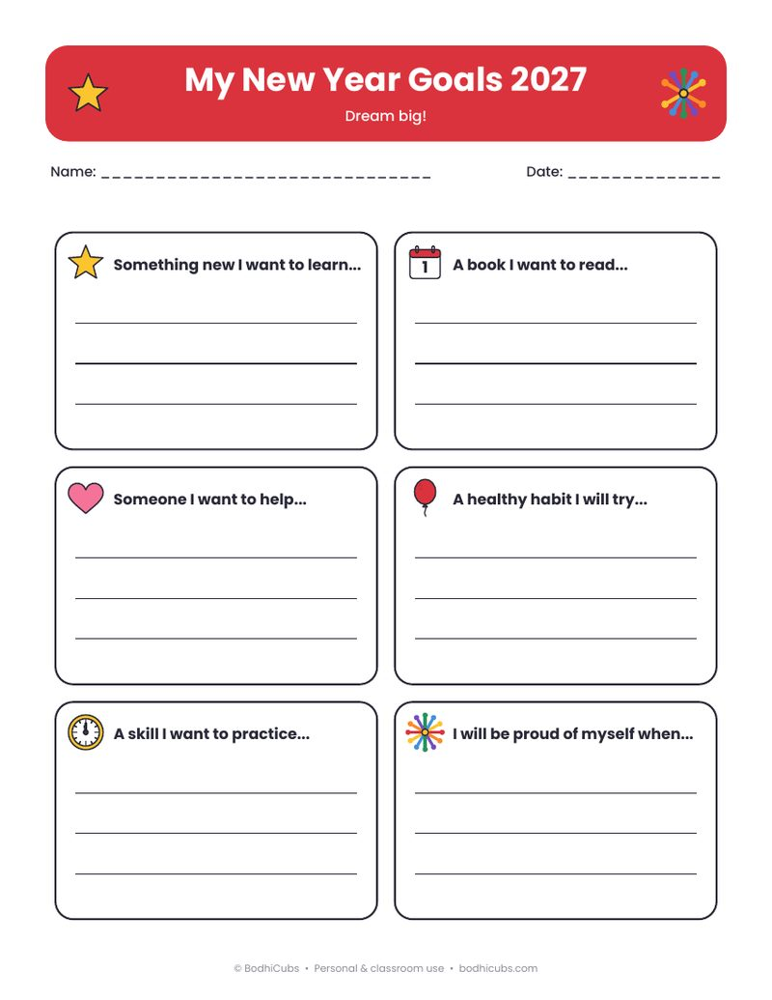
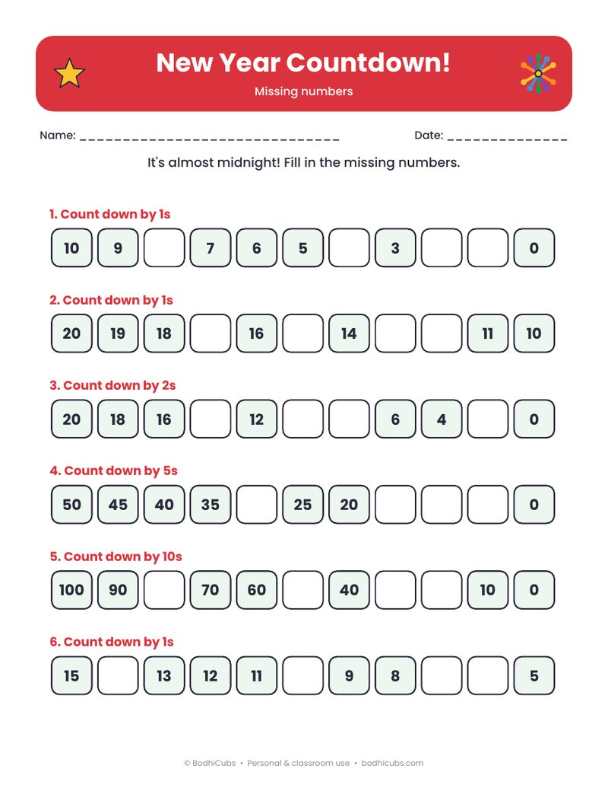
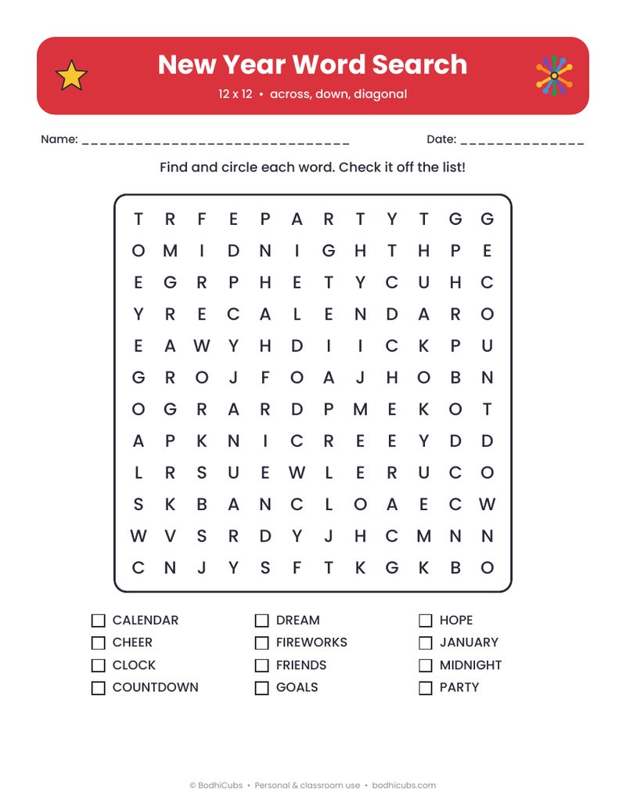
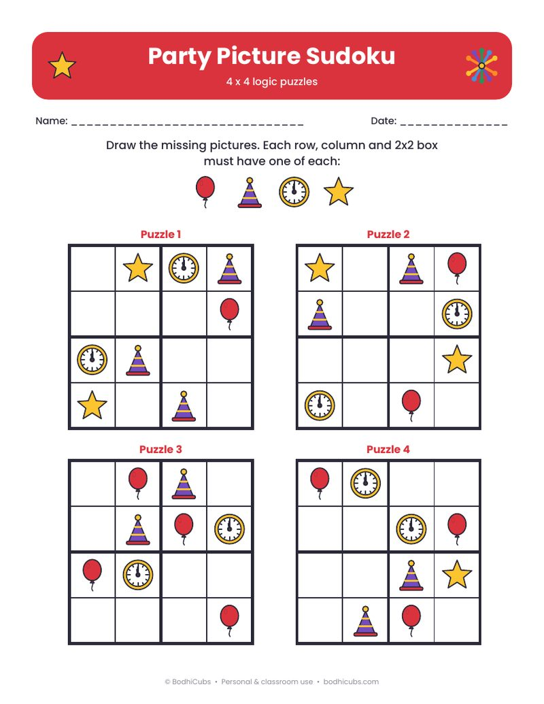
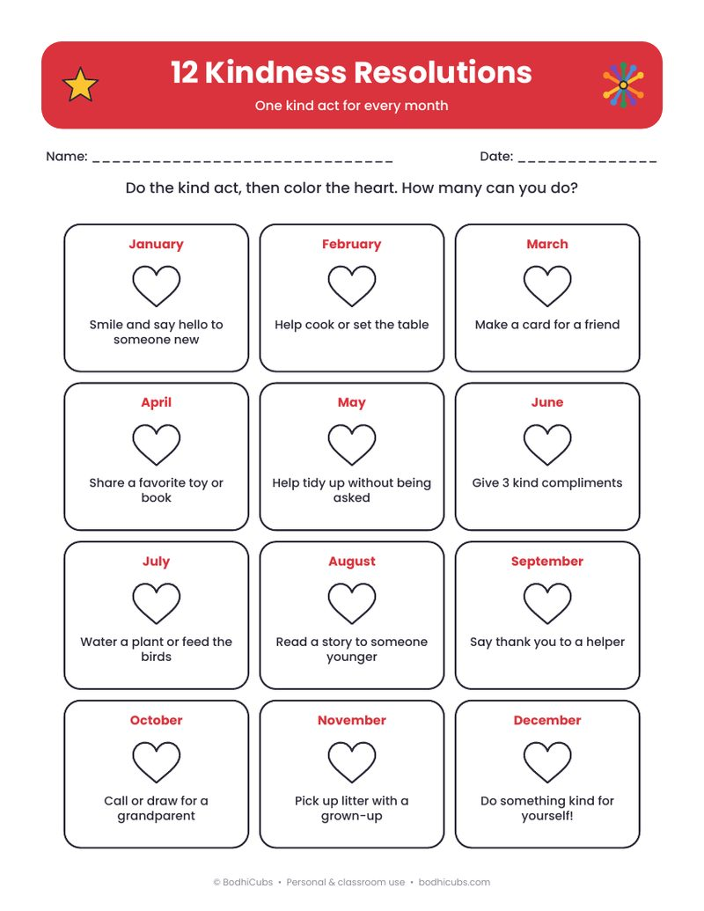

What's inside
- My New Year Goals sheet + My Year in Review
- Party Count & Write and Picture Addition (up to 10)
- New Year Countdown: missing numbers by 1s, 2s, 5s and 10s
- New Year word search (12 words)
- 2 mazes (easy and tricky) + 4 picture sudoku puzzles
- 12 Kindness Resolutions – one kind act for every month
- Black & white version of every page + answer key
Prints on US Letter and A4 – just choose “Fit to page” in your print settings. No sign-up needed.
A happy, screen-free start to the new year
The New Year is a great time to look back and look forward with kids. This free pack mixes calm writing pages with puzzles and math, so children can reflect on their year, set a few simple goals, and still have plenty of fun during the holidays or in the first week back at school.
Younger children (ages 4–5) will enjoy counting the party pictures, the easy balloon maze and coloring the hearts on the kindness page. Older children (ages 6–9) can try the word search, the tricky midnight maze, the picture sudoku and the countdown by 2s, 5s and 10s. The goals and kindness pages work well as a family or class talk: pin them on the fridge or the classroom wall and tick off one kind act each month.
Everything is in one PDF. Low on color ink? Print the black & white pages at the back – kids can color them in themselves. Answers for the math, word search, mazes and sudoku are at the end.
Page previews





Free for personal and classroom use. Please share this page link rather than the file. Want more? Play free science games, Brain Gym and puzzles at BodhiCubs · More free printables